Теория
Тетраэдр
Возьмём треугольник ABC и точку D вне его плоскости. Соединим D с вершинами — получим ещё три треугольника DAB, DBC, DCA. Поверхность из четырёх треугольников называется тетраэдром и обозначается DABC.
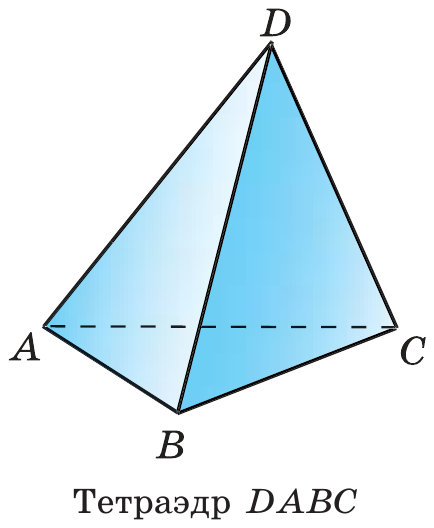
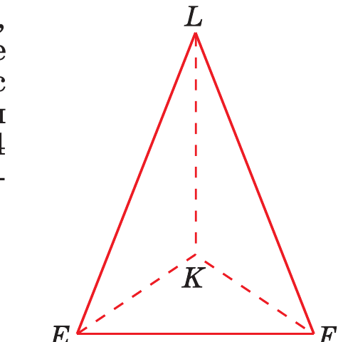
| Элемент | Сколько | Пример |
|---|---|---|
| Грани (треугольники) | 4 | ABC, DAB, DBC, DCA |
| Рёбра | 6 | AB, BC, CA, DA, DB, DC |
| Вершины | 4 | A, B, C, D |
| Пары противоположных рёбер | 3 | AD и BC, BD и AC, CD и AB |
Противоположные рёбра — рёбра без общих вершин. Они всегда скрещиваются (урок 3: одно лежит в грани, другое пересекает её плоскость в точке вне первого).
Основание — грань, которую мы условились считать нижней; остальные три — боковые грани. Какую грань назвать основанием — договорённость.
Параллелепипед
Возьмём два равных параллелограмма ABCD и A₁B₁C₁D₁ в параллельных плоскостях так, что AA₁, BB₁, CC₁, DD₁ параллельны. Боковые четырёхугольники тоже окажутся параллелограммами: например, у ABB₁A₁ стороны AA₁ ∥ BB₁ по построению, а AB ∥ A₁B₁ по свойству 1° параллельных плоскостей (урок 4). Поверхность из шести параллелограммов — параллелепипед ABCDA₁B₁C₁D₁.
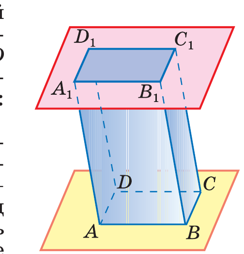
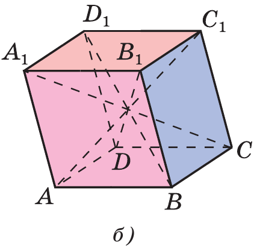
| Элемент | Сколько | Комментарий |
|---|---|---|
| Грани | 6 | все — параллелограммы |
| Рёбра | 12 | по 4 в каждом из трёх направлений |
| Вершины | 8 | |
| Диагонали | 4 | AC₁, BD₁, CA₁, DB₁ |
Смежные грани — имеют общее ребро. Противоположные грани — не имеют общих рёбер (таких пар три). Противоположные вершины — не лежат в одной грани. Диагональ параллелепипеда — отрезок, соединяющий противоположные вершины (не путать с диагональю грани!).
Противоположные грани параллелепипеда параллельны и равны.
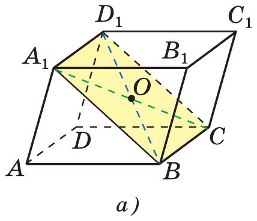
Докажем для граней ABB₁A₁ и DCC₁D₁.
Параллельность. AB ∥ DC (грань ABCD — параллелограмм) и AA₁ ∥ DD₁ (грань ADD₁A₁ — параллелограмм). Две пересекающиеся прямые одной грани параллельны двум прямым другой ⟹ по признаку (урок 4) грани параллельны.
Равенство. AB = DC, AA₁ = DD₁; углы A₁AB и D₁DC равны, так как их стороны сонаправлены (урок 3). Два параллелограмма с равными соседними сторонами и равным углом между ними равны. ∎
Диагонали параллелепипеда пересекаются в одной точке и делятся ею пополам.
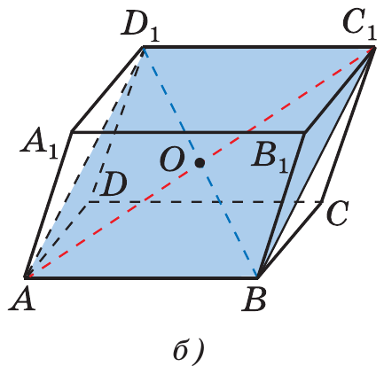
Шаг 1. Четырёхугольник A₁D₁CB: A₁D₁ ∥ AD ∥ BC и A₁D₁ = AD = BC ⟹ это параллелограмм. Его диагонали A₁C и D₁B пересекаются в точке O и делятся ею пополам.
Шаг 2. Четырёхугольник AD₁C₁B — тоже параллелограмм (так же: AB ∥ D₁C₁ и равны). Его диагонали AC₁ и D₁B делятся пополам точкой пересечения. Но середина D₁B — это O. Значит, AC₁ тоже проходит через O и делится ею пополам.
Шаг 3. Так же через параллелограмм A₁B₁CD получаем четвёртую диагональ DB₁. ∎
Сечения: главный навык
Секущая плоскость тетраэдра (параллелепипеда) — любая плоскость, по обе стороны от которой есть точки тела. Она пересекает грани по отрезкам. Сечение — многоугольник, сторонами которого являются эти отрезки.
Сколько сторон может быть у сечения? Не больше, чем граней: каждая грань даёт не более одной стороны.
| Тело | Граней | Какие сечения возможны |
|---|---|---|
| Тетраэдр | 4 | треугольник, четырёхугольник |
| Параллелепипед | 6 | треугольник, четырёх-, пяти-, шестиугольник |
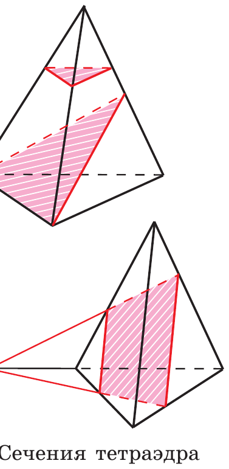
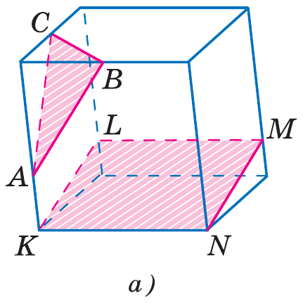
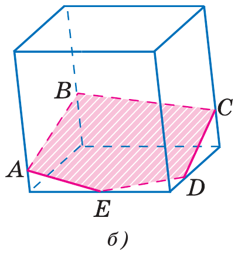
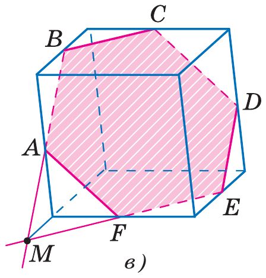
Три правила, на которых держатся все построения
Если две точки секущей плоскости лежат в одной грани, соединяем их отрезком — это сторона сечения (аксиома А2). Точки из разных граней напрямую не соединяем никогда: такой отрезок прошёл бы сквозь тело.
Если секущая плоскость пересекает две параллельные грани, то отрезки сечения на них параллельны (свойство 1° параллельных плоскостей, урок 4). У параллелепипеда противоположные грани параллельны — значит, это правило работает всегда.
Если в одной грани есть две точки сечения, а нужно перейти в соседнюю грань, продлеваем отрезок сечения до пересечения с прямой, содержащей ребро соседней грани. Получаем точку, общую для секущей плоскости и плоскости соседней грани (её называют точкой следа). Две такие общие точки задают прямую, по которой секущая плоскость режет плоскость грани (аксиома А3).
Три задачи из учебника
Задача 1. Сечение тетраэдра плоскостью MNP
На рёбрах AB, BD, CD тетраэдра ABCD отмечены точки M, N, P. Построить сечение плоскостью MNP.
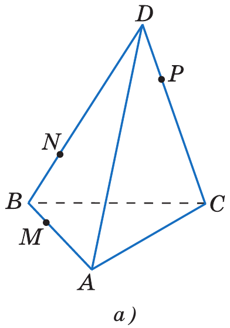
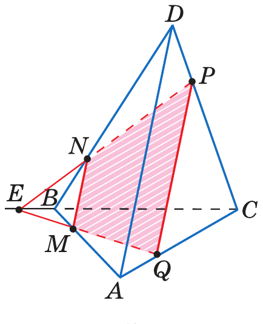
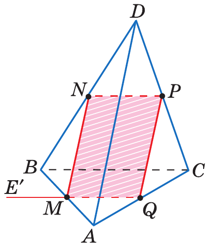
- M и N лежат в грани ABD → проводим MN. N и P лежат в грани BCD → проводим NP. (Правило 1.)
- Нужна сторона в грани ABC. Там есть только одна точка — M. Нужна вторая общая точка плоскостей MNP и ABC.
- Прямые NP и BC лежат в одной плоскости BCD → продлеваем их до пересечения в точке E. Точка E лежит на NP (значит, в секущей плоскости) и на BC (значит, в плоскости ABC). (Правило 3.)
- Секущая плоскость пересекает плоскость ABC по прямой ME. Она пересекает ребро AC в точке Q.
- Соединяем P и Q (обе в грани ACD). Сечение — четырёхугольник MNPQ.
- Особый случай: если NP ∥ BC, то NP параллельна плоскости ABC, и по свойству 1° (урок 2) след на ABC идёт через M параллельно NP.
Задача 2. Сечение тетраэдра, параллельное основанию
Точка M лежит на боковой грани ADB тетраэдра DABC. Построить сечение плоскостью, проходящей через M параллельно основанию ABC.
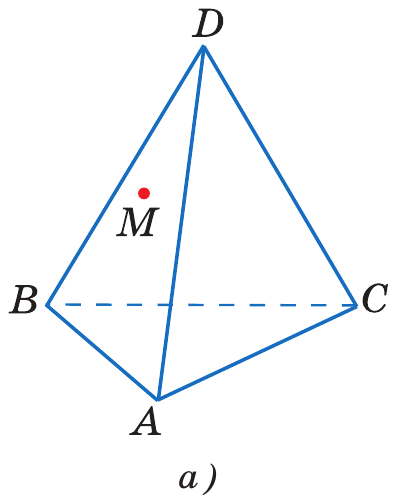
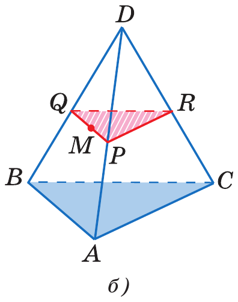
- Секущая плоскость параллельна ABC, значит, она параллельна прямым AB, BC, CA. По свойству 1° (урок 2) её следы на боковых гранях параллельны сторонам основания.
- В грани ADB через M проводим прямую ∥ AB; она пересекает DA в точке P и DB в точке Q.
- В грани ADC через P проводим прямую ∥ AC; она пересекает DC в точке R.
- Соединяем Q и R (грань BDC). Сечение — треугольник PQR, подобный ABC.
Задача 3. Сечение параллелепипеда по трём точкам
На рёбрах параллелепипеда даны точки A, B, C. Построить сечение плоскостью ABC. Ответ зависит от того, на каких рёбрах лежат точки — на рис. 39 все три случая.
- Точки на трёх рёбрах из одной вершины (рис. 39, а): соединяем попарно — треугольник ABC.
- Рис. 39, б: проводим AB и BC. Через A — прямую ∥ BC, через C — прямую ∥ AB (правило 2: противоположные грани). Они дают на нижней грани точки E и D. Проводим ED — пятиугольник ABCDE.
- Рис. 39, в — самый трудный. Продлеваем AB и нижнее ребро той же грани до пересечения в точке M (точка следа на плоскости основания). Через M — прямую ∥ BC: это след секущей плоскости на основании; он пересекает рёбра основания в E и F. Через E — прямую ∥ AB, получаем D. Проводим AF и CD — шестиугольник ABCDEF.
GeoGebra: сечения своими руками
В GeoGebra 3D сечение строится одной командой. Сначала построй сечение на бумаге, потом проверь себя.
Сечение тетраэдра
- A=(0,0,0)
- B=(4,0,0)
- C=(1.5,3.5,0)
- D=(1.8,1.2,4)
- t=Pyramid(A,B,C,D)
тетраэдр - M=Point(Segment(A,B))
точка на ребре AB — её можно двигать - N=Point(Segment(B,D))
точка на ребре BD - P=Point(Segment(C,D))
точка на ребре CD - s=IntersectPath(Plane(M,N,P),t)
сечение — многоугольник
Двигайте точки M, N, P — сечение меняется: становится то треугольником, то четырёхугольником. Поставьте N и P так, чтобы NP ∥ BC, — и посмотрите особый случай задачи 1.
Сечение параллелепипеда (куба)
- c=Cube((0,0,0),(4,0,0),(4,4,0))
куб с ребром 4 - K=(0,0,2)
середина вертикального ребра - L=(4,4,2)
середина противоположного вертикального ребра - B1=(4,0,4)
вершина - s=IntersectPath(Plane(B1,K,L),c)
сечение — проверьте задачу № 85
- s2=IntersectPath(Plane((2,0,0),(4,2,0),(4,4,2)),c)
пример шестиугольного сечения
Если команда IntersectPath недоступна в вашей версии, используйте Intersect(<плоскость>, <многогранник>) — результат тот же.
Задачи урока
Задачи № 66–87 из учебника Атанасяна. Решай с обоснованием: на каждый шаг — ссылка на аксиому, теорему или признак.
Домашнее задание
№ 73, 79, 84, 85 письменно с чертежом. Каждое построение сопровождать списком шагов «что соединяю и почему». Устно: назвать три правила построения сечений.